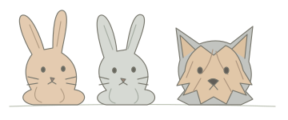

制作
Web・グラフィック制作の経験を土台に、Canvaや動画編集へ。
制作の実務経験あり ／ 新しい技術を習得予定
制作と顧客対応の経験から、次の学びへ
学ぶ目的を決め、実際に試し、次の改善につなげる。
「私の学校」は、その過程を整理するための学習記録アプリです。
以下は本人が設定した方向性です。学習の完了や実務経験の獲得を示すものではありません。
Web・グラフィック制作の経験を土台に、Canvaや動画編集へ。
制作の実務経験あり ／ 新しい技術を習得予定SNS運用の情報設計・発信・振り返りを学ぶ。
目標：2027年中にSNSマーケティング検定取得
Pythonの基礎とAI活用を学び、自分で改善できる範囲を広げる。
目標：プログラミングの基礎を身につける顧客対応・進行管理の経験を生かし、支援できる仕事を広げる。
顧客対応の実務経験あり ／ バックオフィスは習得予定教材の現在地と記録がつながる操作デモです。一覧表の状態を変更して、進捗と次にやることの変化を試せます。
理解の深さや実務経験とは分けて、教材を確認した範囲を表示します。
実際のアプリでは本人専用の保存先へ記録します。このデモは再読み込みでリセットされます。
何のために学ぶか
どこから再開するか
試したことを残す
本人用アプリはGoogleログイン・非公開クラウド保存・学習記録の取り込みに対応しています。Googleカレンダーから学習予定を読み込み、その他の予定は空き時間の判定だけに使います。AI整理は送信内容を自分で確認してから実行できます。
使用技術：HTML・CSS・JavaScript / Firebase Authentication・Cloud Firestore・Hosting
制作・お仕事のご相談